Acute Kidney Injury (10x Visium) Application
acute-kidney-injury-10x-visium-rasterized.Rmd
library(STcompare)
library(SpatialExperiment)
library(MERINGUE)
library(rhdf5)
library(ggplot2)
library(dplyr)
library(patchwork)
library(Matrix)
library(BiocGenerics)
devtools::load_all()
#> ℹ Loading STcompare
#> Warning in fun(libname, pkgname): no display name and no $DISPLAY environment
#> variableIntroduction
In the Getting Started with STcompare
tutorial, we demonstrated that STcompare works on both
simulated and real ST data. We next sought to apply it to compare
healthy and diseased datasets to discover potentially disease-relevant
changes in spatial gene expression patterns. To this end, we focus on a
common and serious disease, acute kidney injury (AKI), by comparing two
previously published murine kidney sections assayed by spot-resolution
10x Visium: a section from a kidney 24 hours post initial AKI injury and
a section from a sham surgery kidney as a control.
This tutorial corresponds with Figures 2f-j from the STcompare paper.
The counts files are stored as h5 files on Zenodo and
can be downloaded directly into R from the url paths
below.
Load files
# The Visium mouse kidney datasets can be found Zenodo: https://doi.org/10.5281/zenodo.17676991
# IL3 - ischemia acute kidney injury dataset
# NL3 - control dataset
# AKI counts ###################################################################
zenodo_url <- "https://zenodo.org/records/19074288/files/IL3_filtered_feature_bc_matrix.h5?download=1"
temp_h5 <- tempfile(fileext = ".h5")
download.file(zenodo_url, temp_h5, mode = "wb")
# this is a list of the internal groups and datasets stored in the HDF5 file
# we are interested in the "matrix/barcodes" dataset
rhdf5::h5ls(temp_h5)
#> group name otype dclass dim
#> 0 / matrix H5I_GROUP
#> 1 /matrix barcodes H5I_DATASET STRING 2970
#> 2 /matrix data H5I_DATASET INTEGER 10857645
#> 3 /matrix features H5I_GROUP
#> 4 /matrix/features _all_tag_keys H5I_DATASET STRING 1
#> 5 /matrix/features feature_type H5I_DATASET STRING 32285
#> 6 /matrix/features genome H5I_DATASET STRING 32285
#> 7 /matrix/features id H5I_DATASET STRING 32285
#> 8 /matrix/features name H5I_DATASET STRING 32285
#> 9 /matrix indices H5I_DATASET INTEGER 10857645
#> 10 /matrix indptr H5I_DATASET INTEGER 2971
#> 11 /matrix shape H5I_DATASET INTEGER 2
# Read the CSC-encoded matrix components from the HDF5 file
file_barcodes <- as.character(rhdf5::h5read(temp_h5, "matrix/barcodes"))
barcodes_matrix <- rhdf5::h5read(temp_h5, "matrix") # stores the sparse matrix components
# convert CSC encoding into an R dgCMatrix
aki_counts <- Matrix::sparseMatrix(
dims = barcodes_matrix$shape,
i = as.numeric(barcodes_matrix$indices),
p = as.numeric(barcodes_matrix$indptr),
x = as.numeric(barcodes_matrix$data),
index1 = FALSE
)
colnames(aki_counts) <- file_barcodes
rownames(aki_counts) <- barcodes_matrix[["features"]]$name
unlink(temp_h5)
# what the counts matrix looks like:
aki_counts[1:5, 1:6]
#> 5 x 6 sparse Matrix of class "dgCMatrix"
#> AAACAAGTATCTCCCA-1 AAACAGAGCGACTCCT-1 AAACAGCTTTCAGAAG-1
#> Xkr4 . . .
#> Gm1992 . . .
#> Gm19938 . . .
#> Gm37381 . . .
#> Rp1 . . .
#> AAACAGGGTCTATATT-1 AAACATTTCCCGGATT-1 AAACCCGAACGAAATC-1
#> Xkr4 . . .
#> Gm1992 . . .
#> Gm19938 . . .
#> Gm37381 . . .
#> Rp1 . . .
# Control counts ###############################################################
zenodo_url <- "https://zenodo.org/records/19074288/files/NL3_filtered_feature_bc_matrix.h5?download=1"
temp_h5 <- tempfile(fileext = ".h5")
download.file(zenodo_url, temp_h5, mode = "wb")
# Read the CSC-encoded matrix components from the HDF5 file
file_barcodes <- as.character(rhdf5::h5read(temp_h5, "matrix/barcodes"))
barcodes_matrix <- rhdf5::h5read(temp_h5, "matrix") # stores the sparse matrix components
# convert CSC encoding into an R dgCMatrix
control_counts <- Matrix::sparseMatrix(
dims = barcodes_matrix$shape,
i = as.numeric(barcodes_matrix$indices),
p = as.numeric(barcodes_matrix$indptr),
x = as.numeric(barcodes_matrix$data),
index1 = FALSE
)
colnames(control_counts) <- file_barcodes
rownames(control_counts) <- barcodes_matrix[["features"]]$name
unlink(temp_h5)
control_counts[1:5, 1:6]
#> 5 x 6 sparse Matrix of class "dgCMatrix"
#> AAACAAGTATCTCCCA-1 AAACAGAGCGACTCCT-1 AAACAGCTTTCAGAAG-1
#> Xkr4 . . .
#> Gm1992 . . .
#> Gm19938 . . .
#> Gm37381 . . .
#> Rp1 . . .
#> AAACAGGGTCTATATT-1 AAACATTTCCCGGATT-1 AAACCCGAACGAAATC-1
#> Xkr4 . . .
#> Gm1992 . . .
#> Gm19938 . . .
#> Gm37381 . . .
#> Rp1 . . .The spatial positions are stored in csv files on Zenodo
which can be downloaded directly into R from the url paths
below. These text files contains a table with rows that correspond to
spots.
The columns correspond to the following fields: barcode:
The sequence of the barcode associated to the spot
array_row: The row coordinate of the spot range from 0 to
127 as the array has 128 rows. array_col: The column
coordinate of the spot in the array. In order to express the orange
crate arrangement of the spots, this column index uses even numbers from
0 to 222 for even rows, and odd numbers from 1 to 223 for odd rows with
each row (even or odd) resulting in 111 spots.
# positions ####################################################################
zenodo_url <- "https://zenodo.org/records/19074288/files/IL3_tissue_positions.csv?download=1"
aki_pos <- read.csv(zenodo_url, header = TRUE, stringsAsFactors = FALSE)
zenodo_url <- "https://zenodo.org/records/19074288/files/NL3_tissue_positions.csv?download=1"
ctrl_pos <- read.csv(zenodo_url, header = TRUE, stringsAsFactors = FALSE)
head(ctrl_pos)
#> barcode array_row array_col
#> 1 AAACAAGTATCTCCCA-1 102 50
#> 2 AAACAGAGCGACTCCT-1 94 14
#> 3 AAACAGCTTTCAGAAG-1 9 43
#> 4 AAACAGGGTCTATATT-1 13 47
#> 5 AAACATTTCCCGGATT-1 97 61
#> 6 AAACCCGAACGAAATC-1 115 45
head(aki_pos)
#> barcode array_row array_col
#> 1 AAACAAGTATCTCCCA-1 102 50
#> 2 AAACAGAGCGACTCCT-1 94 14
#> 3 AAACAGCTTTCAGAAG-1 9 43
#> 4 AAACAGGGTCTATATT-1 13 47
#> 5 AAACATTTCCCGGATT-1 97 61
#> 6 AAACCCGAACGAAATC-1 115 45For this dataset in particular, this is an abridged version of the
tissue_positions.csv provided by 10x Genomics. The spot
rows have already been filtered to only include those in which the spot
falls inside of the tissue. As such, we need to filter the counts
matrices which is genes as rows x barcodes as columns to only include
column names that are present in the barcodes of the positions
matrices.
# number of columns in counts is not the same number of rows in pos
dim(aki_counts)
#> [1] 32285 2970
dim(aki_pos)
#> [1] 2965 3
dim(control_counts)
#> [1] 32285 3229
dim(ctrl_pos)
#> [1] 3215 3
# limit the counts to the spots with positions and make sure they are in the same order
aki_counts <- aki_counts[, colnames(aki_counts) %in% aki_pos$barcode]
control_counts <- control_counts[, colnames(control_counts) %in% ctrl_pos$barcode]
# number of columns in counts is the same number of rows in pos
dim(aki_counts)
#> [1] 32285 2965
dim(aki_pos)
#> [1] 2965 3
dim(control_counts)
#> [1] 32285 3215
dim(ctrl_pos)
#> [1] 3215 3To use functions that require that the barcodes are the row names of a matrix we will move the barcode column to be row names of the position matrices. Next, we visualize both control and AKI positions on the same plot. We rotate the positions by 90 degrees here simply to make the visualizations take up more space on the vertical axis than the horizontal axis.
# plot positions ###############################################################
# set the barcode column as the rownames
rownames(ctrl_pos) <- ctrl_pos$barcode
ctrl_pos <- ctrl_pos[,-1]
colnames(ctrl_pos) <- c("x", "y")
rownames(aki_pos) <- aki_pos$barcode
aki_pos <- aki_pos[,-1]
colnames(aki_pos) <- c("x", "y")
ctrl_pos$group <- "Control"
aki_pos$group <- "AKI"
# visualize both control and AKI positions on the same plot
df <- rbind(ctrl_pos, aki_pos)
pos_plot <- ggplot(df, aes(x = x, y = y, color = group)) +
geom_point() +
scale_color_manual(values = c("Control" = "blue", "AKI" = "red")) +
coord_fixed() +
labs(x = "x", y = "y", color = "Group") +
theme_classic()
pos_plot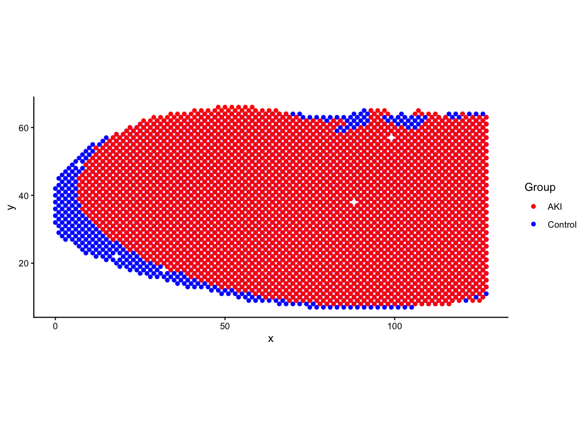
# rotate the tissue by 90-degrees for consistency with the paper
ctrl_pos_rot <- transform(ctrl_pos, x = y, y = -x + max(ctrl_pos$x))
aki_pos_rot <- transform(aki_pos, x = y, y = -x + max(aki_pos$x))
df_rot <- rbind(ctrl_pos_rot, aki_pos_rot)
pos_rot_plot <- ggplot(df_rot, aes(x = x, y = y, color = group)) +
geom_point(size=0.5) +
scale_color_manual(values = c("Control" = "blue", "AKI" = "red")) +
coord_fixed() +
labs(x = "x", y = "y", color = "Group") +
theme_classic()
pos_rot_plot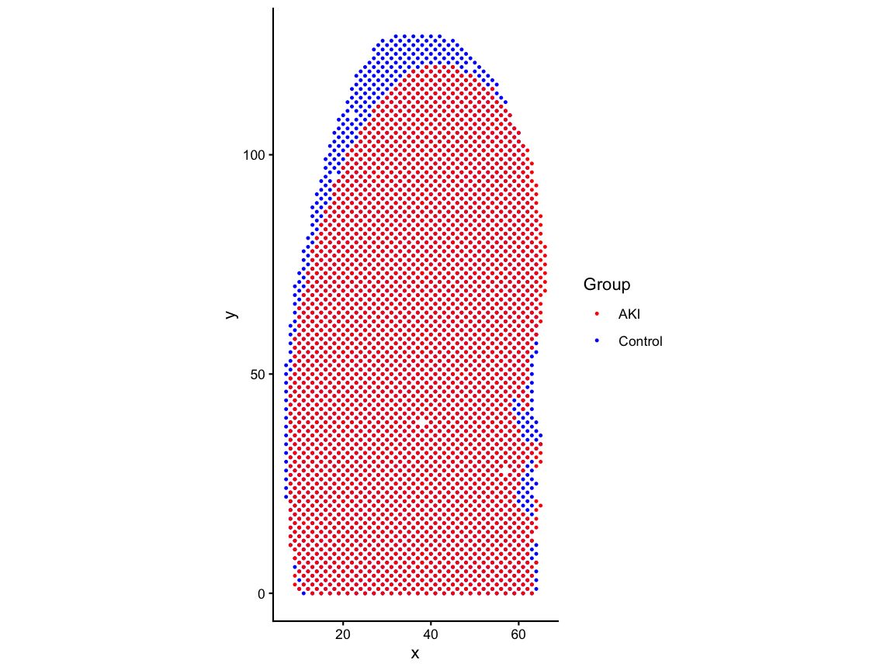
# AlignSince we want to eventually attribute spatial changes in gene expression patterns to AKI by comparing the same spatial locations in the control and AKI, it is important that we use an alignment method to make the matched spatial locations contain the same regions within the tissue and remove structural differences that could be confounding. If we do not minimize structural misalignment, then we can less confidently conclude that the gene expression variation that we observe is due AKI.
Here, we used STalign to perform an affine-only alignment based on one-hot encoding of region labels: cortex, outer medulla, and inner medulla.
# read the csv which has the AKI positions aligned to control via STalign
zenodo_url <- "https://zenodo.org/records/19486091/files/aki_region_onehot_STalign_to_ctrl_region_onehot_affine_only.csv.gz?download=1"
aki_STalign <- read.csv(gzcon(url(zenodo_url, open = "rb"), text = TRUE), header = TRUE, row.names =1)
# store the aligned positions
aki_pos_aligned <- aki_STalign[,c("aligned_x", "aligned_y")]
#rename columns and add group for consistency with ctrl_pos_rot
colnames(aki_pos_aligned) <- c("x", "y")
aki_pos_aligned$group <- "AKI"
# rotate the tissue by 90-degrees for consistency with the paper
aki_pos_rot <- transform(aki_pos_aligned, x = y, y = -x + max(aki_pos_aligned$x))
aki_pos_aligned <- aki_pos_rot
df_aligned <- rbind(ctrl_pos_rot, aki_pos_aligned)
pos_aligned_plot <- ggplot(df_aligned, aes(x = x, y = y, color = group)) +
geom_point(size=0.5) +
scale_color_manual(values = c("Control" = "blue", "AKI" = "red")) +
coord_fixed() +
labs(x = "x", y = "y", color = "Group") +
theme_classic()
pos_aligned_plot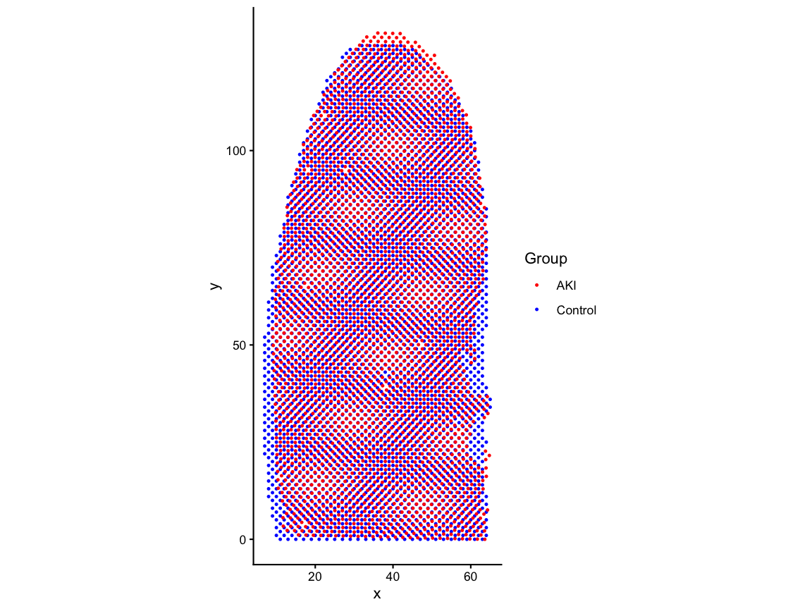
Create SpatialExperiment
Now that we have created counts matrices and aligned positions
matrices we need to create a SpatialExperiment
as this is the required input form for the functions we want to use in
STcompare (and SEraster). A
SpatialExperiment is an object that store spatial
transcriptomics data, in this case, combining gene expression matrices
as assays with the spatial coordinates of each spatial
location as spatialCoords.
AKI_ctrl_SE <- SpatialExperiment::SpatialExperiment(
assays = list(counts = control_counts),
spatialCoords = as.matrix(ctrl_pos_rot[,1:2]),
)
AKI_aki_SE <- SpatialExperiment::SpatialExperiment(
assays = list(counts = aki_counts),
spatialCoords = as.matrix(aki_pos_aligned[,1:2])
)Rasterize
In order to use STcompare we need paired data to make
one-to-one comparisons. The dimensions of the SpatialExperiment
assays must be same for the control and AKI. And the row
names of the spatialCoords for control must match the row
names of the spatialCoords for AKI. And rows with the same
name must have the same x,y coordinates.
So far we do not have true paired data because there is a different number of spots in control and AKI datasets and because the alignment caused the same barcode name in the control and AKI datasets no longer refer to the same x,y-coordinate.
Therefore, we need to create a new shared unit system that we can use to make one-to-one comparisons.
In order to have units that we can use to make one-to-one comparisons, we need to aggregate the position and count matrices of control and AKI datasets to create a new share unit system in which each unit gets a unique identifier that refers to the same x,y coordinate in control and AKI. This aggregation process is also refered to as rasterization.
We will use SEraster to rasterize the data into a a new
shared pixel grid, converting the matrices from spots-by-positions and
genes-by-spots to pixel-by-positions and genes-by-pixels.
To use SEraster::rasterizeGeneExpression, the user
should specify a resolution that results in pixel sizes that are
relevant to the tissue size and the biological features of interest. The
resolution should be larger enough to smooth out mismatches in the
structural alignment but not too large where pixels are too big and thin
biological structures of interest get lost.
SEraster also lets the user specify if using square or
hexagonal pixels. Here we choose hexagonal pixels since they are closer
in shape to the Visium spots.
Lastly, SEraster::rasterizeGeneExpression allows the
user to specify what aggregation function they want to use.
fun can be set to mean or sum. If
mean, pixel value for each pixel would be mean of gene
expression for all spots within the pixel. If sum, pixel
value for each pixel would be sum of gene expression for all spots
within the pixel.
Because we perform counts-per-million (CPM) normalization (converting
the expression of any gene into a proportion of total gene expression
for all genes in the pixel) after rasterization, we could have chosen
either of mean or sum.
After performing CPM normalization, when we plot the total expression
of all genes in each pixel, the value of each pixel should be 1 million
(1e6). For SEraster::plotRaster, we specify the name of the
assay from which we want to plot gene expression with
assay_name and we specify the name to give the color bar
with name. By default, if the the rasterized
SpatialExperiment is not subsetted to one gene, plotRaster
visualizes the total expression (from the specified assay) of all genes
for each spot.
input <- list(AKI_ctrl = AKI_ctrl_SE, AKI_aki = AKI_aki_SE)
rast <- SEraster::rasterizeGeneExpression(
input,
resolution = 5,
fun = "sum",
square = FALSE,
assay_name = 'counts'
)
# add a CPM normalization assay to the rasterized SpatialExperiment
assay(rast$AKI_ctrl, "CPM") <- Matrix::t(Matrix::t(assay(rast$AKI_ctrl))/Matrix::colSums(assay(rast$AKI_ctrl)))*1e6
assay(rast$AKI_aki, "CPM") <- Matrix::t(Matrix::t(assay(rast$AKI_aki))/Matrix::colSums(assay(rast$AKI_aki)))*1e6
# plot total expression for new pixels
p1 <- SEraster::plotRaster(rast$AKI_ctrl, assay_name = "CPM", name = "total expression")
#> Coordinate system already present.
#> ℹ Adding new coordinate system, which will replace the existing one.
p2 <- SEraster::plotRaster(rast$AKI_aki, assay_name = "CPM", name = "total expression")
#> Coordinate system already present.
#> ℹ Adding new coordinate system, which will replace the existing one.
p1 + p2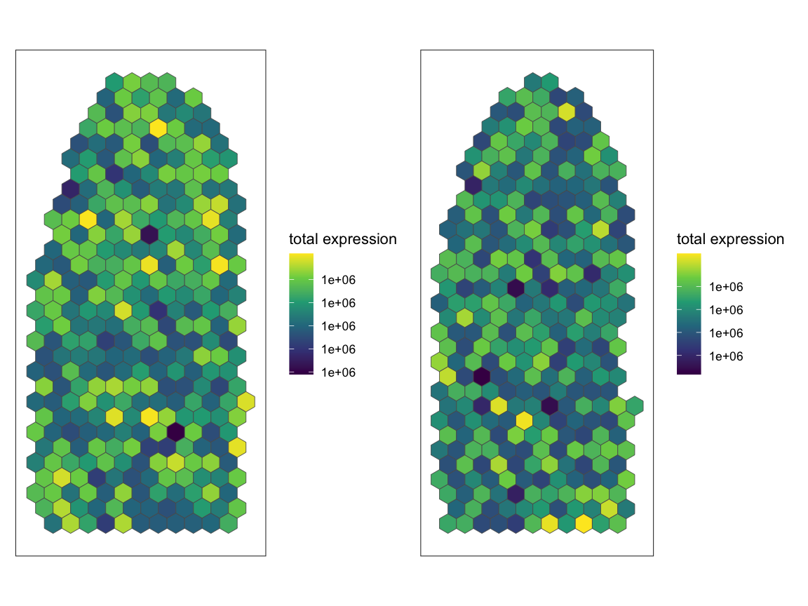
Identify SVGs
We now want to identify which genes are spatially variable genes (SVG). Existing SVG analysis methods can identify genes that change from spatially variable to not or vice versa across conditions. However, genes that are classified as spatially variable in both conditions can still vary in the specific spatial pattern in each condition.
Unlike previous methods, STcompare is to be able to
identify SVGs that change in spatial pattern across datasets. To
demonstrate this ability to identify that a gene’s spatial pattern
changed even if the gene is spatially variable in both datasets, we
limit the analysis here to only genes that are spatially variable in
both control and AKI. However, STcompare can be run without
filtering for SVGs.
We use Moran’s I to identify SVGs and use the implementation from
MERINGUE. Here we choose a filterDist size
that is 2x the size of our rasterization resolution to achieve a
neighbor-relationship graph that looks like the image below with
connectivity to adjacent neighbors.
# use MERINGUE to get the neighbor-relationships
w <- MERINGUE::getSpatialNeighbors(SpatialExperiment::spatialCoords(rast$AKI_ctrl), filterDist = 10)
par(mfrow=c(1,1))
MERINGUE::plotNetwork(SpatialExperiment::spatialCoords(rast$AKI_ctrl), w)
Define a function to calculate Moran’s I for a given SpatialExperiment (optionally specify assay name) and filter distance.
# Returns a dataframe with these columns:
# observed: Observed Moran's I statistic measuring spatial autocorrelation
# expected: Expected Moran's I under null hypothesis of random distribution
# sd: Standard deviation of Moran's I under the null hypothesis
# p.value: Statistical significance of the spatial pattern
# p.adj: Adjusted p-value (FDR-corrected) for multiple testing correction
moransI <- function(SE_temp, filterDist, assayName=1){
# use MERINGUE to get the neighbor-relationships
w <- MERINGUE::getSpatialNeighbors(SpatialExperiment::spatialCoords(SE_temp), filterDist = filterDist)
par(mfrow=c(1,1))
MERINGUE::plotNetwork(SpatialExperiment::spatialCoords(SE_temp), w)
# Identify significantly spatially auto-correlated genes
I <- MERINGUE::getSpatialPatterns(SummarizedExperiment::assays(SE_temp)[[assayName]], w)
return(I)
}Run Moran’s I for control and AKI datasets separately to identify SVGs in each dataset. We specify the assay name as “CPM” to use the CPM normalized assay for this analysis.
moransI_ctrl <- moransI(rast$AKI_ctrl, filterDist = 10, assayName = "CPM")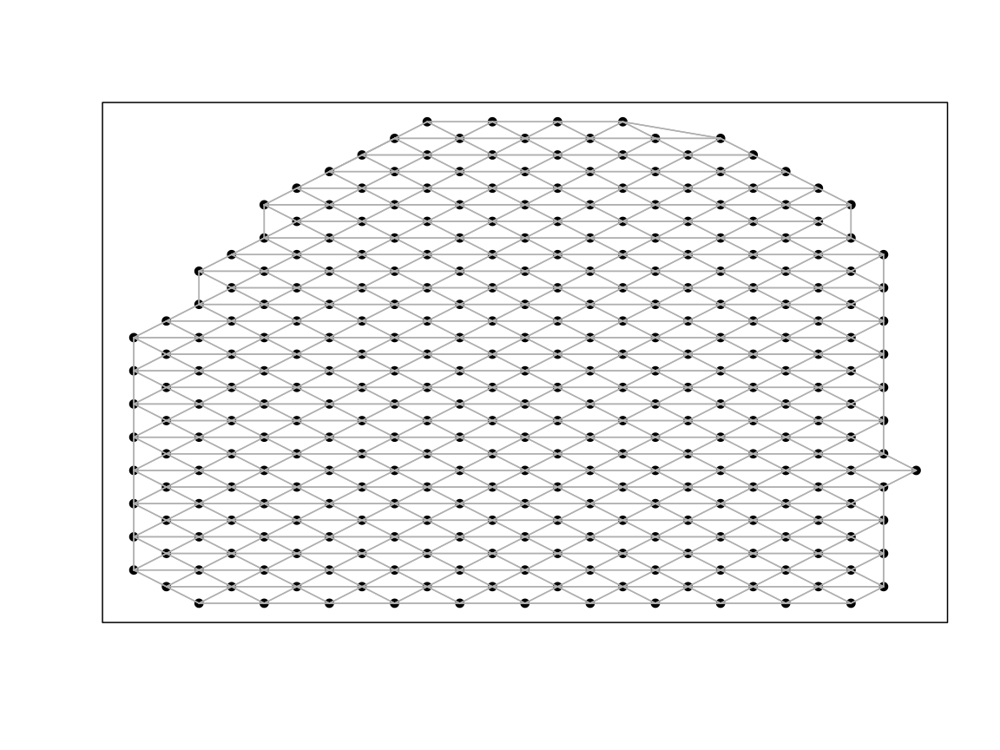
head(moransI_ctrl)
#> observed expected sd p.value p.adj
#> Xkr4 NaN -0.00310559 NaN NaN NaN
#> Gm1992 NaN -0.00310559 NaN NaN NaN
#> Gm19938 NaN -0.00310559 NaN NaN NaN
#> Gm37381 NaN -0.00310559 NaN NaN NaN
#> Rp1 NaN -0.00310559 NaN NaN NaN
#> Sox17 0.2648528 -0.00310559 0.03242136 1.110223e-16 1.229277e-15
moransI_aki <- moransI(rast$AKI_aki, filterDist = 10, assayName = "CPM")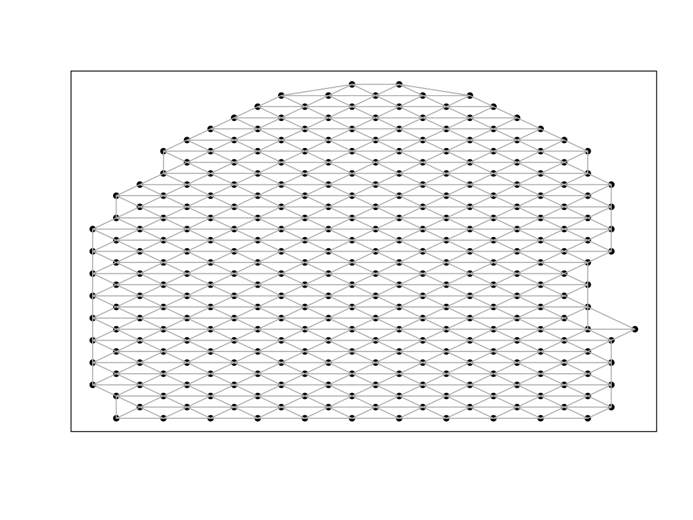
head(moransI_aki)
#> observed expected sd p.value p.adj
#> Xkr4 -0.003194888 -0.003194888 0.0002968688 5.000000e-01 6.723985e-01
#> Gm1992 NaN -0.003194888 NaN NaN NaN
#> Gm19938 -0.003194888 -0.003194888 0.0002968688 5.000000e-01 6.723985e-01
#> Gm37381 NaN -0.003194888 NaN NaN NaN
#> Rp1 NaN -0.003194888 NaN NaN NaN
#> Sox17 0.203604780 -0.003194888 0.0331154966 2.121707e-10 1.240427e-09Here we get the list of shared SVGs, those genes which are significantly spatially autocorrelated in both control and AKI
# Filter for the genes that are statistically significantly autocorrelated
svg_ctrl <- moransI_ctrl %>% filter(p.adj == 0) %>% rownames()
svg_aki <- moransI_aki %>% filter(p.adj == 0) %>% rownames()
svg_int <- intersect(svg_ctrl, svg_aki) # genes that are SVGs in both conditions
svg_uni <- union(svg_ctrl, svg_aki) # genes that are SVG in one condition but not the other
# Out of 32285 genes:
# there are 1673 genes that are SVGs in the control dataset
length(svg_ctrl)
#> [1] 1673
# there are 2318 genes that are SVGs in the aki dataset
length(svg_aki)
#> [1] 2318
# there are 1046 genes that are SVGs in both datasets
length(svg_int)
#> [1] 1046
# there are 2945 genes that are SVGs in either datasets
length(svg_uni)
#> [1] 2945The functions we used in MERINGUE changed the gene names
to be syntactically valid for R (prepending the character “X” if a name
starts with number and replacing the “-” with “.” ). Here we will return
the names to the original form.
#return names in `svg_int` that are not in `rownames(rast$AKI_ctrl)`
setdiff(svg_int, rownames(rast$AKI_ctrl))
#> [1] "X4930523C07Rik" "X1810037I17Rik" "X0610040J01Rik" "X0610005C13Rik"
#> [5] "X4931406C07Rik" "X4833439L19Rik" "X1110038F14Rik" "H2.K1"
#> [9] "H2.D1" "mt.Nd1" "mt.Nd2" "mt.Co1"
#> [13] "mt.Co2" "mt.Atp6" "mt.Co3" "mt.Nd3"
#> [17] "mt.Nd4" "mt.Nd5" "mt.Cytb"
rownames(rast$AKI_ctrl) <- make.names(rownames(rast$AKI_ctrl), unique = TRUE)
rownames(rast$AKI_aki) <- make.names(rownames(rast$AKI_aki), unique = TRUE)
#check if any differences remain
setdiff(svg_int, rownames(rast$AKI_ctrl))
#> character(0)Filter lowly expression genes
In the case that you run STcompare without filtering for
SVGs, you do need to apply some alternative filtering. STcompare’s
SpatialCorrelation does not work when there is zero
expression of a gene expression as it cannot create permutations for the
empirical p-value from zero expression so we must at least remove genes
with zero expression. Furthermore, rarely-expressed genes that have
noisy expression are not likely to be significantly similarly or
differently spatially patterned across datasets. To reduce the
computational time of creating permutations for these genes, we can for
example use the code below to filter to only include genes that are
detected in at least 5% of pixels in both samples in downstream
analyses.
# there are 32285 genes in both samples
# which rows in the matrix that the gene is expressed in greater than 5% of all spots
# this has to be true in both datasets to be considered a "good gene"
good.genes <- names(which(
(Matrix::rowSums(SummarizedExperiment::assay(rast$AKI_ctrl, 'CPM') > 0) / ncol(SummarizedExperiment::assay(rast$AKI_ctrl, 'CPM'))*100 > 5) &
(Matrix::rowSums(SummarizedExperiment::assay(rast$AKI_aki, 'CPM') > 0) / ncol(SummarizedExperiment::assay(rast$AKI_aki, 'CPM'))*100 > 5)))
length(good.genes)
#> [1] 13633Spatial Correlation
Next we use STcompare to calculate Pearson’s correlation coefficient for genes that were SVGs in both conditions to investigate whether there was a change in the spatial patterning of expression.
deltaX and deltaY are the parameters that
controlling the degree of smoothing in permutations of datasets X and Y,
respectively. Delta is a proportion calculated by dividing k neighbors
by N total observations in X, where k is the number of neighbors in the
permutation of X that should be within the radius smoothed by the
Gaussian kernel to achieve the amount ofautocorrelation present in the
original X. If a single delta is not known, a sequence of deltas can be
inputted and the best delta will be found such that it minimizes the sum
of squares of the residuals between the variogram of the permutation
generated from the delta and the variogram of the target. By default,
STcompare sets this sequence to
seq(0.1, 0.9, .1) but here we add two smaller values to the
sequence to have finer smoothing options for the permutations.
nPermutations is the parameter that controls how many
permutations to create for the empirical p-value estimation. The more
permutations, the more accurate the p-value estimation but the longer
the runtime. To balance this tradeoff, we can set STcompare
to first create a smaller number of permutations and then only create a
larger number of permutations for genes that have an empirical p-value
less than 0.05 based on the smaller number of permutations.
After computing the permutations for each gene, Multiple Hypothesis Testing (MHT) correction is used to correct for the false positives that arise from chance. The default MHT correction used is BH correction. To reduce the runtime for this tutorial, the results are precomputed.
# set up parameters for spatialCorrelationGeneExp
# choosing the genes that are SVGs in both conditions
genes_chosen <- svg_int
## alternative: choosing the genes that are expressed in greater than 5% of all spots
# genes_chosen <- good.genes
# The input is the spatial experiments subset to the chosen genes of interest
input <- list('AKI_ctrl'= rast$AKI_ctrl[genes_chosen,],
'AKI_aki'= rast$AKI_aki[genes_chosen,])
# `deltaX` and `deltaY` are the parameters that controlling the degree of smoothing in permutations of datasets X and Y, respectively
deltaList <- replicate(length(genes_chosen), c(0.01, 0.05, seq(0.1, 0.9, .1)), simplify = FALSE)
# creates 100 permutations and then if a gene has an empirical p-value is less than 0.05, creates 1000 permutations for more accurate p-value estimation
nPermutations <- c(100,1000)
# running spatialCorrelationGeneExpIterPermutations
start_time <- Sys.time()
deltaList <- replicate(length(genes_chosen), c(0.01, 0.05, seq(0.1, 0.9, .1)), simplify = FALSE)
kidneyCorrelation <- STcompare::spatialCorrelationGeneExpIterPermutations(
input,
nPermutations = nPermutations,
deltaX = deltaList,
deltaY = deltaList,
assayName = "CPM", # use the CPM normalized assay for this analysis
nThreads = 22, # parallelize genes across threads
BPPARAM = BiocParallel::MulticoreParam(), #setting up parallel-execution back-end
verbose = TRUE, # prints name of gene as progress updates, which is helpful for long runs
seed = 0) # set seed for reproducibility of the permutation results
end_time <- Sys.time()
print(end_time - start_time) Now we can look at the results.
STcompare::spatialCorrelationGeneExp returns two
adjusted empirical p-values, pValuePermuteX from creating
an empirical null from permutations of observations in X and
pValuePermuteY from creating an empirical null from
permutations of observations in Y. We require both adjusted empirical
p-values to be less than 0.05 to consider the gene statistically
significantly correlated.
The correlationCoef column contains the Pearson’s
correlation coefficient for the gene’s spatial pattern across the two
samples. A positive correlation coefficient indicates that the gene has
a similar spatial pattern in both samples, while a negative correlation
coefficient indicates that the gene has an opposite spatial pattern in
the two samples. The magnitude of the correlation coefficient indicates
how similar or different the spatial patterns are, with values closer to
1 or -1 indicating more similar or more different patterns,
respectively.
We will save the names of the significantly positively correlated genes and significantly negatively correlated genes in separate vectors to use for downstream analyses.
# Full script to generate the precomputed vignette results available at:
# system.file("scripts", "visiumKidneySpatialCorrelation.R", package = "STcompare")
# load data generated from the script
load(system.file("extdata", "kidneyCorrelation.RData", package = "STcompare"))
# look at results
head(kidneyCorrelation)
#> correlationCoef pValueNaive pValuePermuteX pValuePermuteY
#> Adhfe1 0.04334308 4.462727e-01 0.663625378 0.67078156
#> Lactb2 0.30825122 2.858253e-08 0.007238754 0.01180254
#> Sbspon -0.02157551 7.046877e-01 0.866569201 0.85637427
#> Rpl7 0.26711355 1.763978e-06 0.055197889 0.07471429
#> Gsta3 0.41087127 4.261450e-14 0.000000000 0.00000000
#> Ptpn18 0.36318813 3.947477e-11 0.002083665 0.00000000
#> deltaStarMedianX deltaStarMedianY deltaStarX deltaStarY
#> Adhfe1 0.05 0.20 0.05, 0..... 0.2, 0.2....
#> Lactb2 0.10 0.30 0.5, 0.4.... 0.4, 0.4....
#> Sbspon 0.10 0.60 0.05, 0..... 0.3, 0.7....
#> Rpl7 0.10 0.05 0.1, 0.2.... 0.05, 0.....
#> Gsta3 0.30 0.10 0.1, 0.4.... 0.1, 0.4....
#> Ptpn18 0.10 0.20 0.1, 0.1.... 0.1, 0.1....
#> nullCorrelationsX nullCorrelationsY
#> Adhfe1 -0.03764.... 0.062752....
#> Lactb2 0.035352.... 0.142770....
#> Sbspon 0.072179.... -0.02512....
#> Rpl7 0.129689.... 0.217621....
#> Gsta3 0.185058.... 0.126745....
#> Ptpn18 -0.01400.... -0.10270....
# saving names of the significantly positively correlated svg genes
svgSigPos <- kidneyCorrelation %>%
dplyr::filter(pValuePermuteX < 0.05 & pValuePermuteY < 0.05) %>%
dplyr::filter(correlationCoef > 0) %>%
rownames()
# 707 genes are SVGs that are significantly positively correlated
length(svgSigPos)
#> [1] 707
# saving names of the significantly negatively correlated svg genes
svgSigNeg <- kidneyCorrelation %>%
dplyr::filter(pValuePermuteX < 0.05 & pValuePermuteY < 0.05) %>%
dplyr::filter(correlationCoef < 0) %>%
rownames()
# 24 genes are SVGs that are significantly negatively correlated
length(svgSigNeg)
#> [1] 24Here, we visualize the distribution of correlation coefficients for significantly positively correlated, significantly negatively correlated, and not significantly correlated genes.
# visualize the significantly positively correlate and significantly negatively correlated svg genes
# Figure 2J - Rate of Significance for SVGs
# add a column for significance category (SigPos, SigNeg, NotSig) based on the svgSigPos and svgSigNeg vectors
fig_2j <- kidneyCorrelation %>%
dplyr::mutate(Sig = dplyr::case_when(rownames(kidneyCorrelation) %in% svgSigPos ~ "SigPos",
rownames(kidneyCorrelation) %in% svgSigNeg ~ "SigNeg",
.default = "NotSig")) %>%
ggplot2::ggplot(ggplot2::aes(x= Sig, y = correlationCoef, color = Sig)) +
ggplot2::geom_violin() +
ggplot2::geom_jitter(width = 0.2, alpha = 0.1) +
ggplot2::ylim(-1,1) +
ggplot2::scale_color_manual(values = c("SigPos" = "green", "SigNeg" = "blue", "NotSig" = "grey")) +
ggplot2::theme_classic() +
ggplot2::labs(x = "Significance",
y = "Correlation Coefficient",
title = "Correlation Coefficient for Significantly Positively, Negatively, and Not Significantly Correlated SVGs")
fig_2j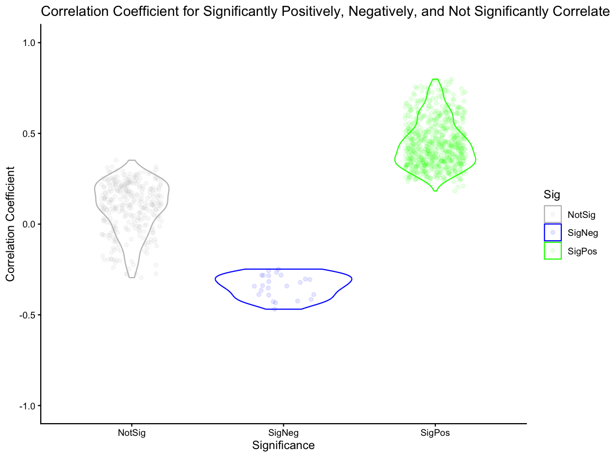
Spatial Fold Change Similarity
Next, we use STcompare::spatialSimilarity to calculate
the fold change similarity metric for the same genes that were SVGs in
both conditions to investigate whether there is a magnitude change in
the spatial patterning of expression.
# Finding the spatial similarity
# If t1 and t2 are null, then the default threshold is the 0.05 quantile of gene expression.
start_time <- Sys.time()
ss <- STcompare::spatialSimilarity(
input = input,
foldChange = 1,
assayName = "CPM",
t1 = NULL,
t2 = NULL
)
end_time <- Sys.time()
print(end_time-start_time)
#> Time difference of 9.895078 secsWe compare the correlation and similarity metrics for only the significantly correlated genes and showed that the correlation and similarity metrics offer orthogonal insights as both significantly positively and significantly negatively correlated genes can have a range of similarity values.
# 2k - Comparing Correlation Metric to Similiarty metric
# create a df of correlation and similarity values for each gene
sim_corr <- data.frame(gene = ss$similarityTable$gene[ss$similarityTable$gene %in% svg_int],
correlation = kidneyCorrelation$correlationCoef[rownames(kidneyCorrelation) %in% svg_int],
similar = ss$similarityTable$percentSimilarity[ss$similarityTable$gene %in% svg_int])
head(sim_corr)
#> gene correlation similar
#> 1 Adhfe1 0.04334308 0.07565789
#> 2 Lactb2 0.30825122 0.16129032
#> 3 Sbspon -0.02157551 0.09574468
#> 4 Rpl7 0.26711355 0.78501629
#> 5 Gsta3 0.41087127 0.63754045
#> 6 Ptpn18 0.36318813 0.43389831
sim_corr_plt <- sim_corr %>%
dplyr::mutate(Sig = case_when(gene %in% svgSigPos ~ "SigPos",
gene %in% svgSigNeg ~ "SigNeg",
.default = "NotSig")) %>%
dplyr::filter(Sig %in% c("SigPos", "SigNeg")) %>%
ggplot2::ggplot() +
ggplot2::geom_point(ggplot2::aes(x = correlation, y = similar, color = Sig), alpha = 0.25, size = 1) +
ggplot2::xlim(NA,1) +
ggplot2::coord_fixed() +
ggplot2::scale_color_manual(values = c("SigPos" = "green", "SigNeg" = "blue")) +
ggplot2::theme_classic() +
ggplot2::labs(x = "Correlation" , y = "Similarity",
title = "Similarity for significantly positively and negatively correlated SVGs")
sim_corr_plt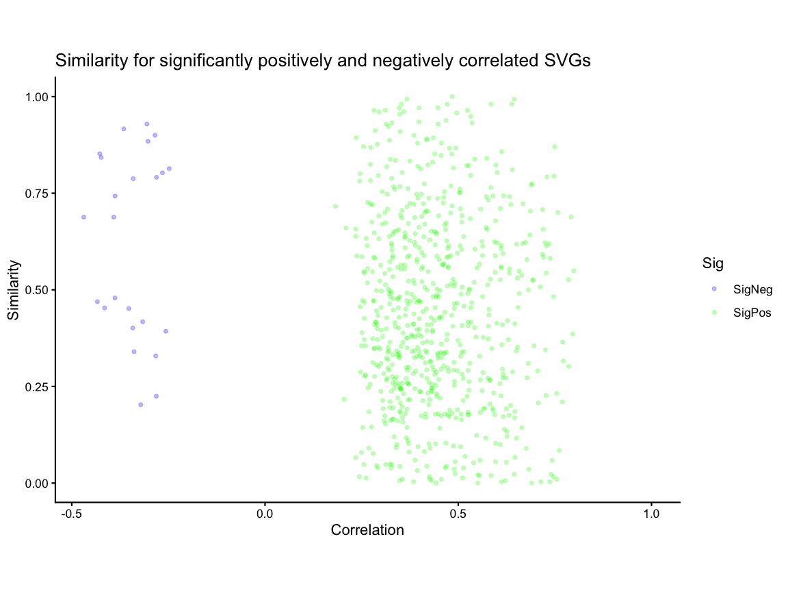
Visualization of Example Genes
Lastly, we visualize the correlation and similarity metrics for two example genes,
- one significantly positively correlated gene but with low similarity because expression in one condition is greater than the other for all pixels and
- one significantly negatively correlated gene with the smallest
difference in number of pixels for which expression in AKI is twice as
much as control (y > 2x;
percentDissimilarityY) and number of pixels for which expression in control is twice as much as AKI (x > 2y;percentDissimilarityX).
compute_dissimilarity <- function(x, y) {
data.frame(
percentDissimilarityY = mean(y > 2 * x, na.rm = TRUE),
percentDissimilarityX = mean(x > 2 * y, na.rm = TRUE)
)
}
sim_corr_2 <- sim_corr %>%
dplyr::rowwise() %>%
dplyr::mutate(
compute_dissimilarity(
x = as.numeric(rast$ctrl[gene, ]),
y = as.numeric(rast$AKI[gene, ])
)
) %>%
dplyr::ungroup()
# for the significantly positively correlated svg genes, get gene with lowest similarity (if tied break tie by highest correlation coefficient)
gene1 <- sim_corr_2 %>%
dplyr::filter(gene %in% svgSigPos) %>% # filter to only significantly positively correlated genes
dplyr::arrange(desc(correlation)) %>% # if there are ties in similarity, the gene with the highest correlation coefficient will be at the top
dplyr::arrange(similar) %>% # arrange in ascending order of similarity so that the gene with the lowest similarity is at the top,
dplyr::pull(gene) %>%
head(1)
# for the significantly negatively correlated svg genes, get gene with smallest difference in percent dissimilarity
gene2 <- sim_corr_2 %>%
dplyr::filter(gene %in% svgSigNeg) %>% # filter to only significantly negatively correlated genes
dplyr::mutate(diff = abs(percentDissimilarityX - percentDissimilarityY)) %>% # create a new column for the absolute difference between percentDissimilarityX and percentDissimilarityY
dplyr::arrange(diff) %>% # arrange in ascending order of the difference column so that the gene with the smallest difference is at the top
dplyr::pull(gene) %>%
head(1)Next, we use SEraster::plotRaster to plot gene
expression for the two example genes in control and AKI samples to
visualize the spatial patterns of expression. Then, we use
STcompare::plotCorrelationGeneExp to visualize the
correlation of the spatial patterns across the two samples for each
gene.
# plot gene expression spatial patterns of example genes
#get the shared pixels between the two samples to show only the pixels that are used for the one-to-one comparisons
sharedPixels <- intersect(rownames(SpatialExperiment::spatialCoords(rast$AKI_ctrl)),
rownames(SpatialExperiment::spatialCoords(rast$AKI_aki)))
#use SEraster::plotRaster to plot the spatial pattern of gene expression for each gene in each sample for only the shared pixels
gene1_plt_ctrl <- SEraster::plotRaster(rast$AKI_ctrl[gene1, sharedPixels], assay_name = "CPM", name = "CPM expression")
#> Coordinate system already present.
#> ℹ Adding new coordinate system, which will replace the existing one.
gene1_plt_aki <- SEraster::plotRaster(rast$AKI_aki[gene1, sharedPixels], assay_name = "CPM", name = "CPM expression")
#> Coordinate system already present.
#> ℹ Adding new coordinate system, which will replace the existing one.
gene2_plt_ctrl <- SEraster::plotRaster(rast$AKI_ctrl[gene2, sharedPixels], assay_name = "CPM", name = "CPM expression")
#> Coordinate system already present.
#> ℹ Adding new coordinate system, which will replace the existing one.
gene2_plt_aki <- SEraster::plotRaster(rast$AKI_aki[gene2, sharedPixels], assay_name = "CPM", name = "CPM expression")
#> Coordinate system already present.
#> ℹ Adding new coordinate system, which will replace the existing one.
# use the plotCorrelationGeneExp function to generate the correlation plots
gene1_corr <- plotCorrelationGeneExp(
speList = input,
spatialCorrelation = kidneyCorrelation,
geneName = gene1,
assayName = "CPM"
)
gene2_corr <- plotCorrelationGeneExp(
speList = input,
spatialCorrelation = kidneyCorrelation,
geneName = gene2,
assayName = "CPM"
)
# use patchwork to put three plots together for each gene
gene1_plt_ctrl | gene1_plt_aki | gene1_corr
#> Ignoring unknown labels:
#> • fill : "Data"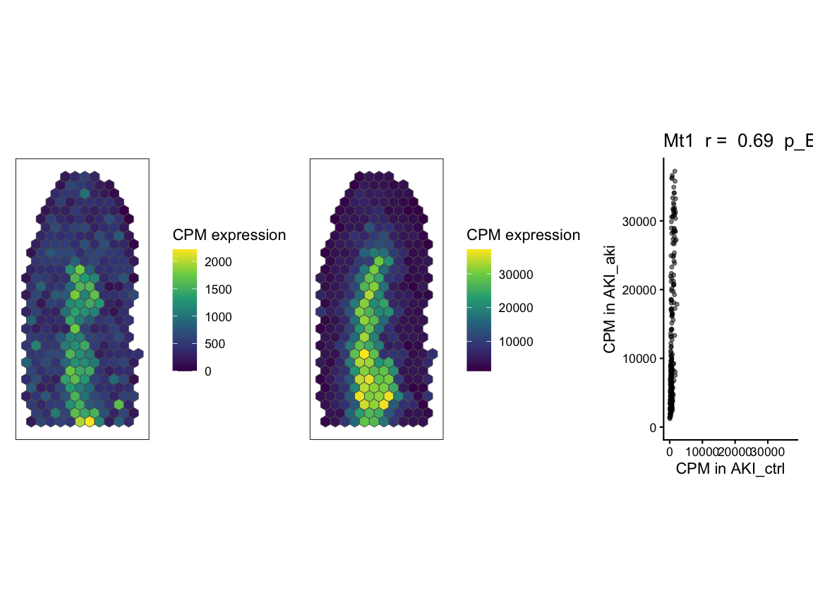
gene2_plt_ctrl | gene2_plt_aki | gene2_corr
#> Ignoring unknown labels:
#> • fill : "Data"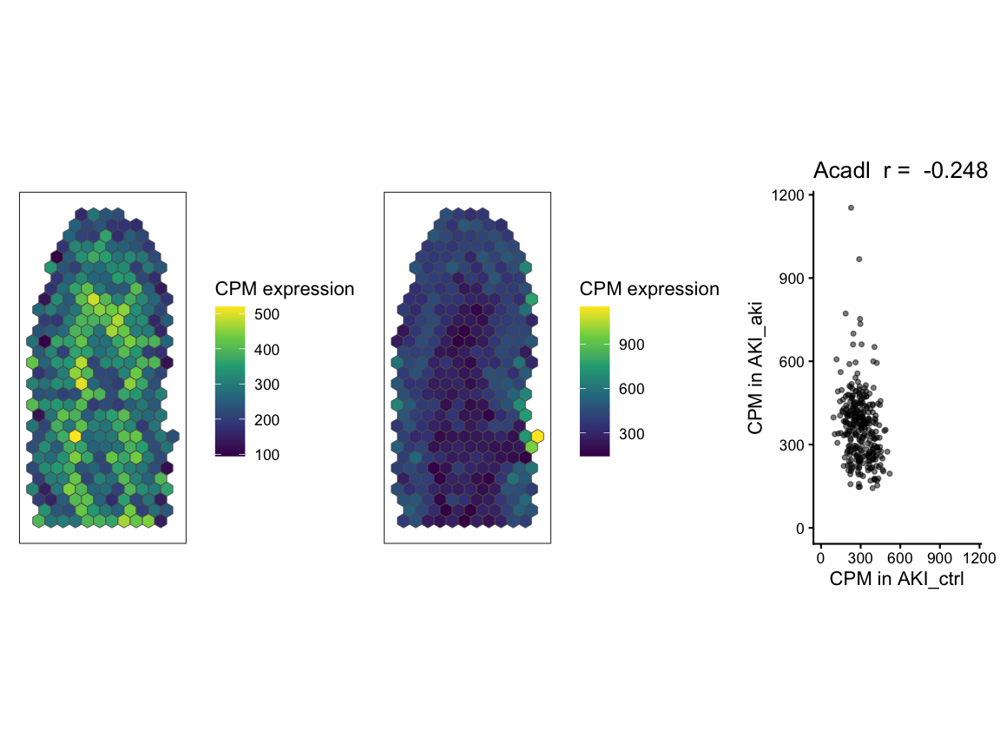
Lastly, we use STcompare::linearRegression to visualize
the fold change relationship across pixels and classifications for eache
pixel for each gene as a scatter plot and
STcompare::pixelClass to show the spatial pattern of the
pixel classification. In both cases, pixels are classified into
categories based on whether they have higher expression in control,
higher expression in AKI, or similar expression in both samples.
# Figure 2I - fold change linear regression and spot classification
gene1_lr <- STcompare::linearRegression(ss, gene=gene1, assayName = "CPM") + ggplot2::theme_classic() + ggplot2::coord_fixed()
gene2_lr <- STcompare::linearRegression(ss, gene=gene2, assayName = "CPM") + ggplot2::theme_classic() + ggplot2::coord_fixed()
gene1_pc <- pixelClass(ss, gene=gene1, assayName = "CPM")
#> Coordinate system already present.
#> ℹ Adding new coordinate system, which will replace the existing one.
gene2_pc <- pixelClass(ss, gene=gene2, assayName = "CPM")
#> Coordinate system already present.
#> ℹ Adding new coordinate system, which will replace the existing one.
# use patchwork to put two plots together for each gene
gene1_lr | gene1_pc
#> Warning: Removed 16 rows containing missing values or values outside the scale range
#> (`geom_point()`).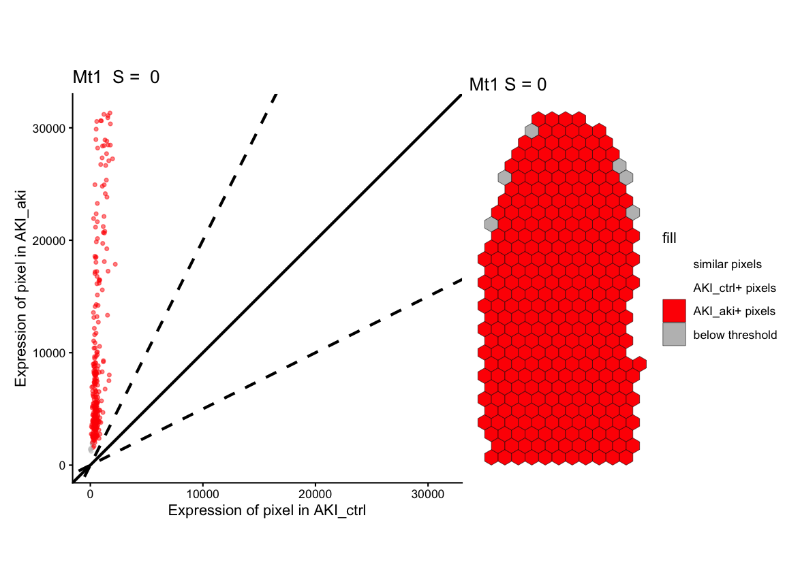
gene2_lr | gene2_pc
#> Warning: Removed 16 rows containing missing values or values outside the scale range
#> (`geom_point()`).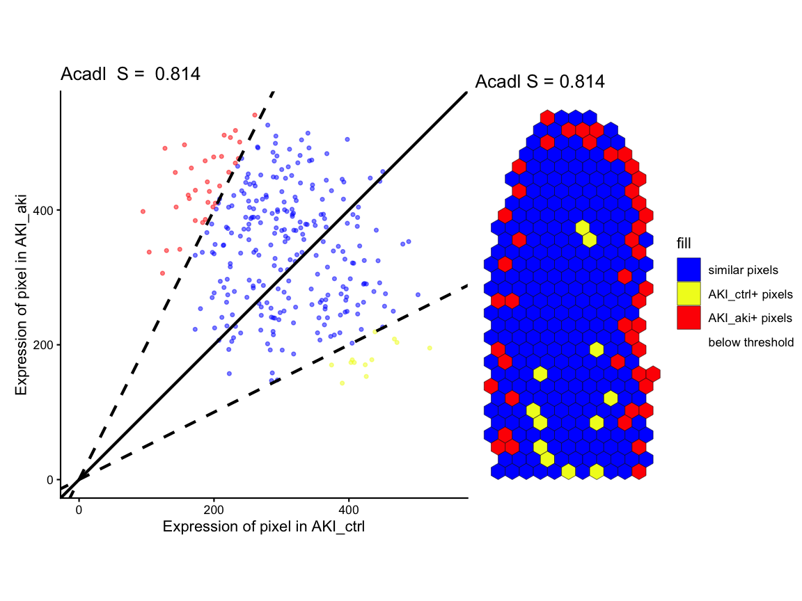